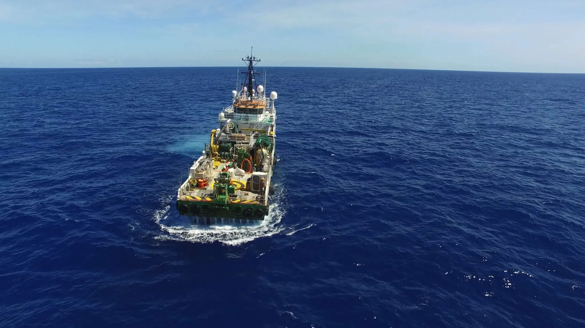
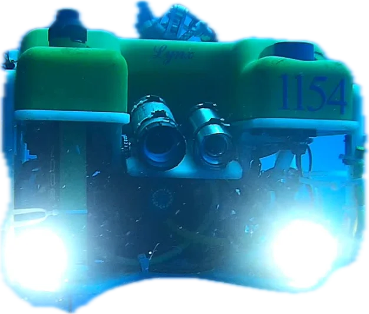

PT / EN◐Contato
Oceânica · desde 1978
Mergulhadores, ROVs Work Class e frota própria a serviço da energia offshore. Da superfície a três mil metros.

Superfície · 0 m
Role · 0 → 3000 m
01 · Superfície

Abaixo daqui, o trabalho é das máquinas. Quem mergulha aprende a pilotá-las.

Escala logarítmica
02 · Seção

Embarcações com ROVs Work Class de 150 a 250 HP operam até três mil metros. A única empresa brasileira contratada em toda essa faixa.
03 · Leito marinho
↓ Continua: o sistema
Oceânica · desde 1978
Superfície · 0 m